What made you smile?
It is a cool feature, easy configurable.
What did you find confusing?
- Confusing docs. It should be mirroring the recomm flow of the user to help him find the related docs
easier.
- And it does not provide details on how to configure it, and then it links a configuration
page, but then shows 3ds flows below
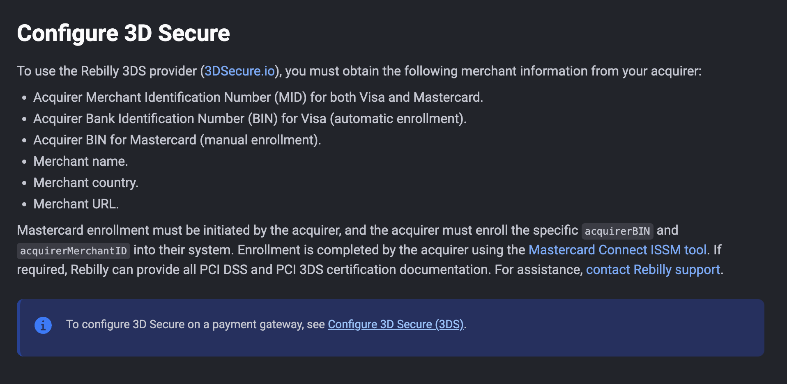
- Testing is mentioned at the bottom of 3ds page, but at that point, we were not explicitly told how
to configure it
-
[3ds configuration
link](https://www.rebilly.com/docs/settings/set-up-a-gateway#configure-3d-secure-(3ds)) points to a
part of setup payment gateway page, it would be much clearer if it was a separate perhaps
-
It is explaining what 3ds is, and links me to configuration, to the same page I just came from
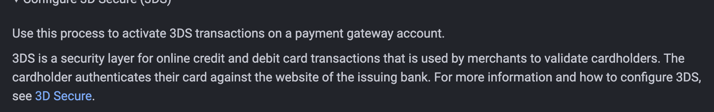
-
topic is about testing, but we are firstly prompted to configure it, perhaps this all needs to be
one tutorial/guide?
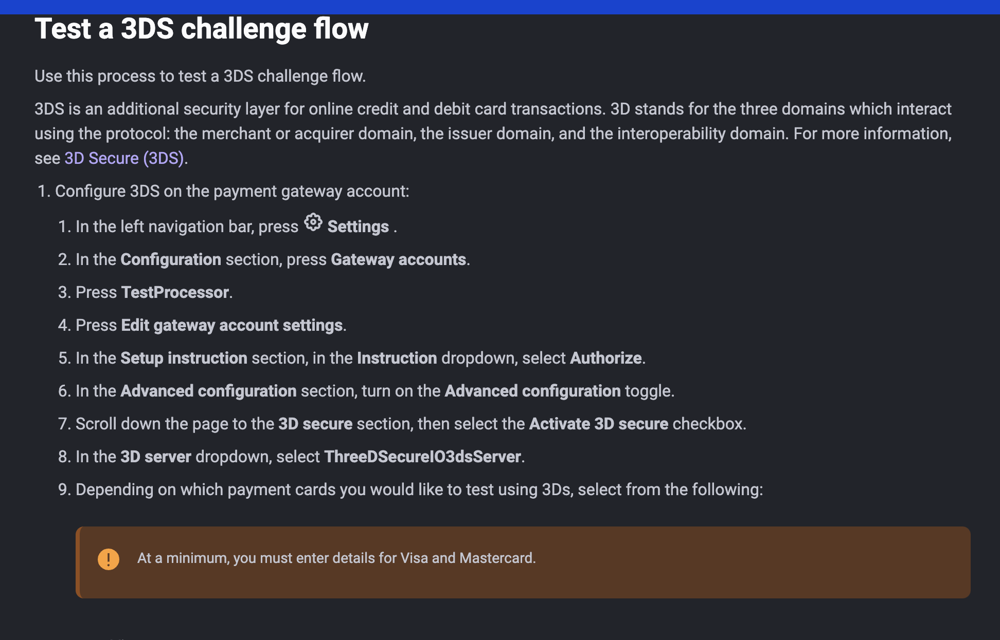
-
not sure what the admonition means at all, and also not sure this is best way to show the internal
process, perhaps we can replace with a flowchart of some sort? (edited)
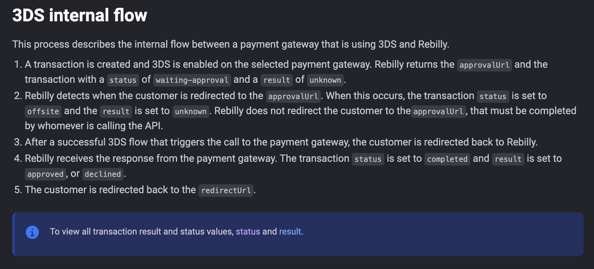
-
Clicking on "Test a generic 3DS flow" on the bottom of this page, I get redirected to just see test
details - completely unexpected.
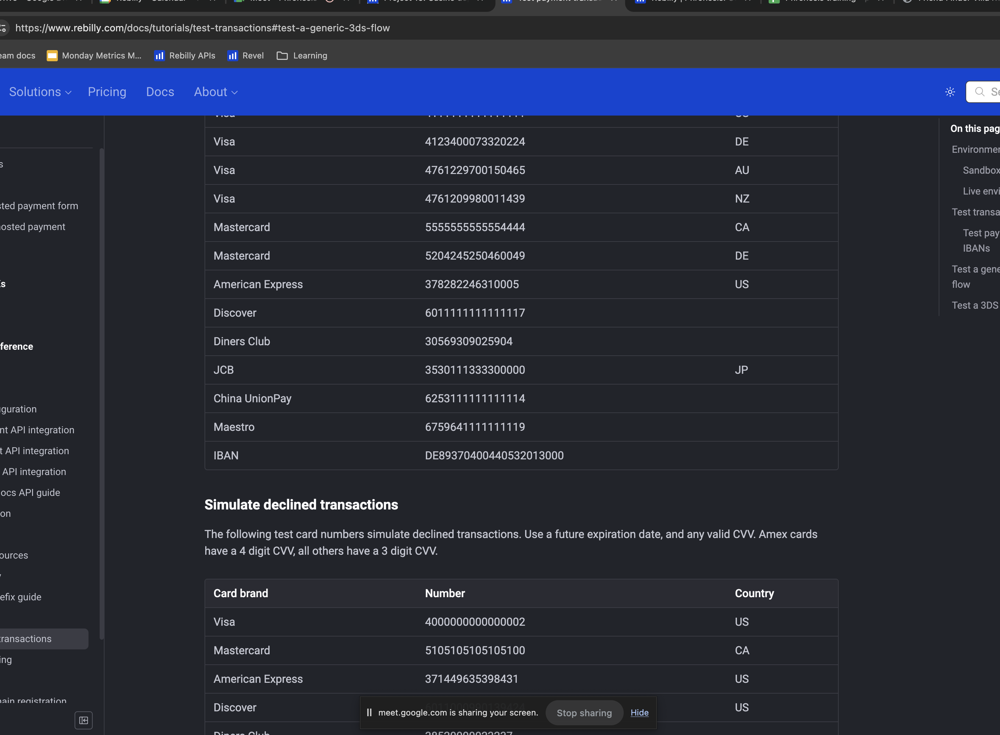
- Placeholders are used as labels to explain validation, which should not be the case.
- "Decline not enrolled" is not clear because it is a checkbox, I would expect different wording.
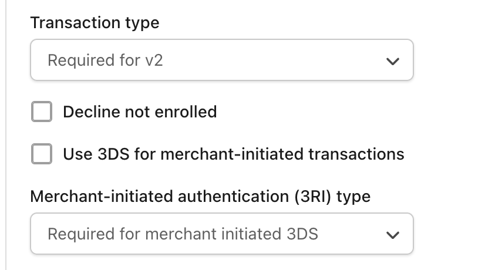
-
Capitalization issues with card names:
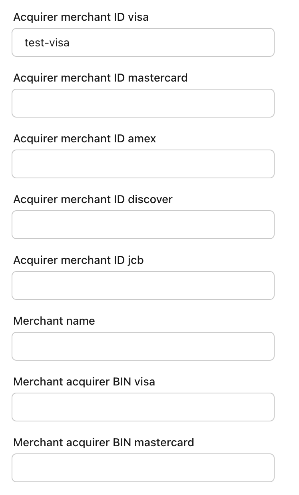
We can group these properties by card, I found it confusing I had to make changes for visa, and two
fields are separated by 5 text boxes.
-
When we just put in Visa test details, as per the guide, we got validation errors, and the
Mastercard properties did not show validation failed styling (red borders, etc), rather just summary
error field
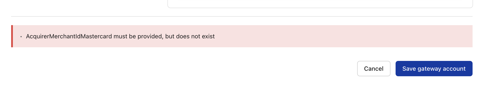
-
our payment instruments dropdown grew quite long - we should have an overflow here to manage this.
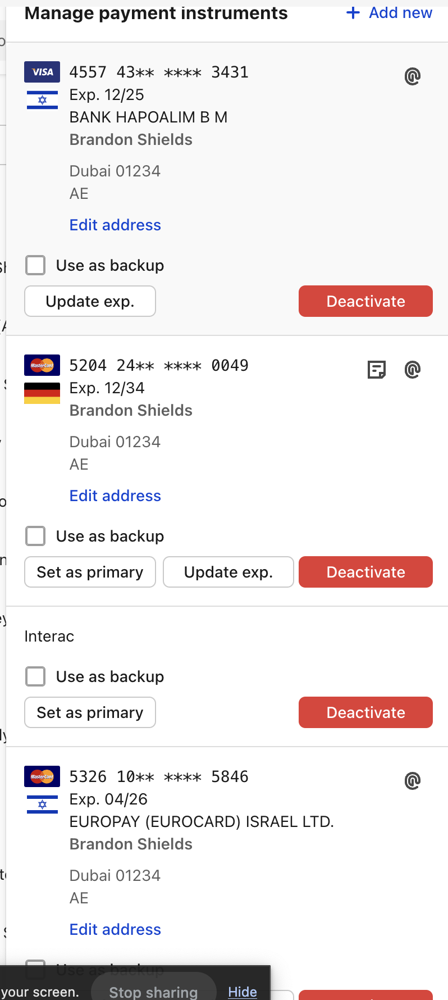
-
Clicking "Choose another payment method" when 3DS declines redirects to HPF
-
We could not find docs on differences between generic 3ds flow and challenge flow? Is "frictionless"
flow generic?
-
Setting the filters for bank country broke up the payment flow
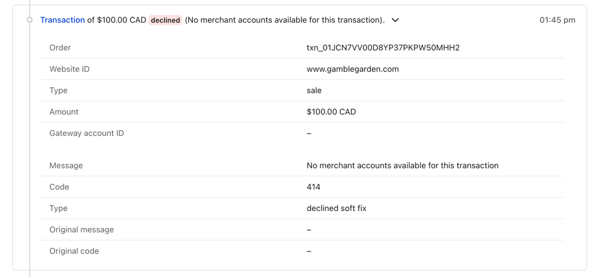
-
3DS challenge worked, even when instruction was "do nothing", but documentation states it should be
set to "Authorize"
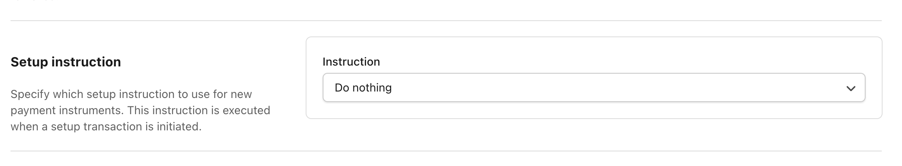
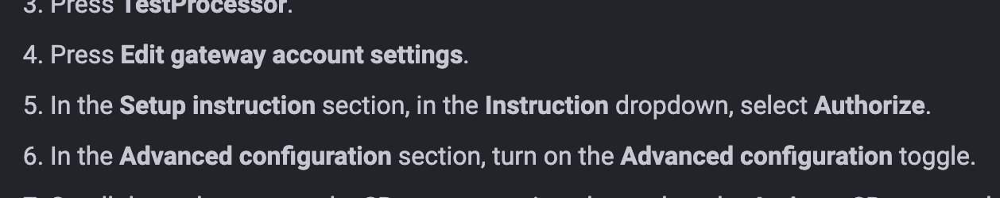
-
Hard to test when filtering to specific bank countries, as we only have few test cards, and we do
not have both challenge and frictionless test cards on file
-
I can click the plan text, and it hides the border around the element.
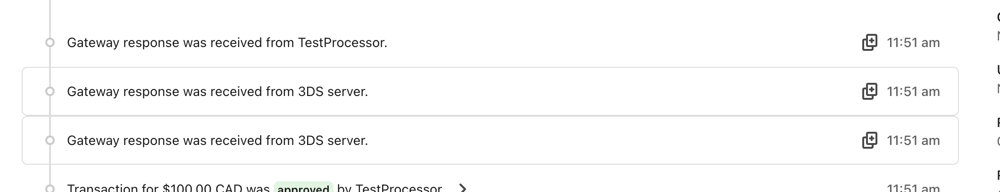
-
Instruments visual bug:
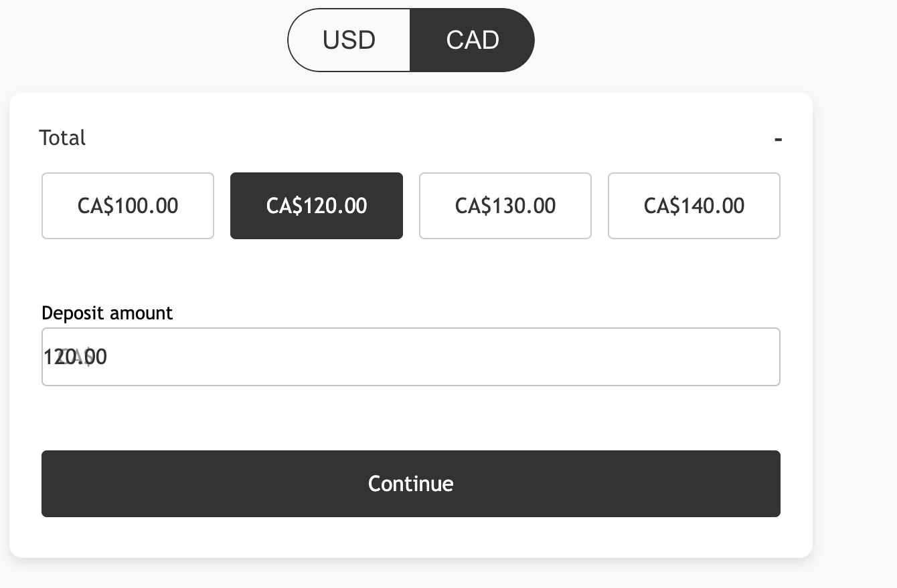